[80] Thăng chức lần 4 – Chính phái
[80] Thăng chức lần 4 – Tà phái / Thăng chức lần 4 – Chính phái
- Gặp Môn Chủ Thần Võ Môn tại Thần Võ Môn, nhận Thăng chức lần 4 1/5 (80)
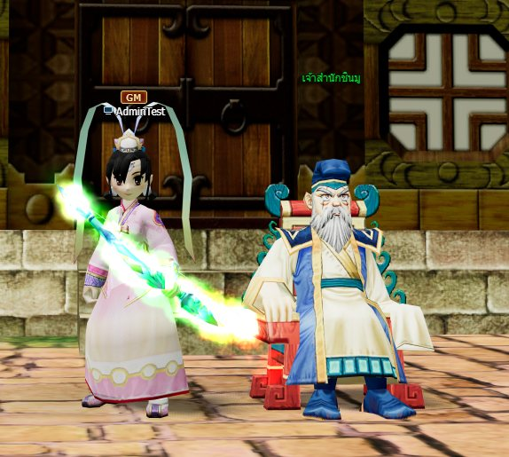
- Gặp Trưởng Lão Truyền Công, nhận Thăng chức lần 4 1/5 (73)
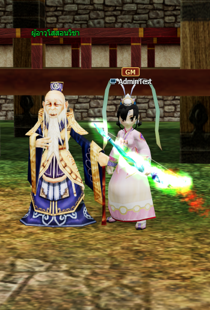
- Gặp Hoàng Diện Lão Nhân, nhận Thăng chức lần 4 1/5 (73)
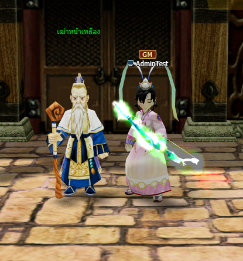
- Trả nhiệm vụ cho Truy Phong Hiệp Khách (trong bản đồ Thần Võ Môn)
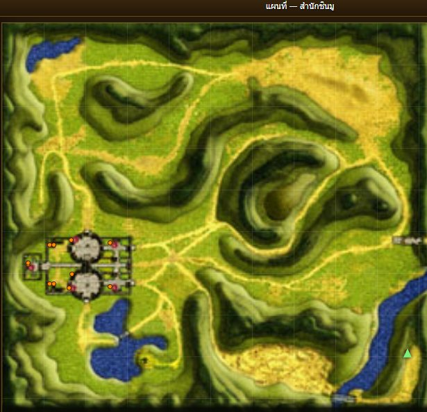
- Đến Liễu Chính Quan gặp Quan Chủ Liễu Như, nhận Thăng chức lần 4 1/5 (73)
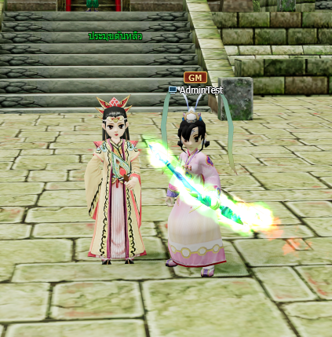
- Trả nhiệm vụ cho Dung Dung Nại tại Liễu Chính Quan (xem bản đồ)
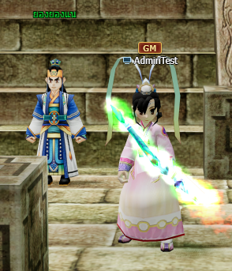
- Gặp Trịnh Tinh Ba để trả nhiệm vụ Thăng chức lần 4 1/5 (73)
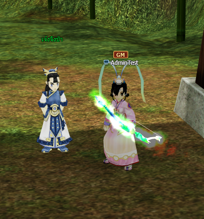
- Quay về Thần Võ Môn gặp Trưởng Lão Truyền Công, nhận Thăng chức lần 4 1/5 (73)
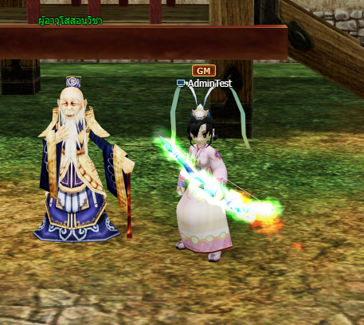
- Gặp NPC Trưởng Lão Giới Luật để nhận Thăng chức lần 4 2/5 (75)
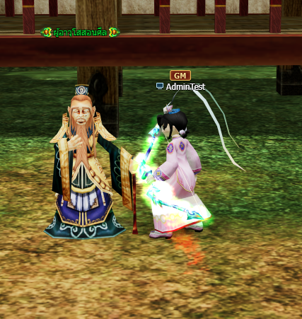
- Trả nhiệm vụ cho Truy Phong Hiệp Khách để nhận Thăng chức lần 4 2/5 (75) rồi dịch chuyển đến Địa Tâm Động tầng 2
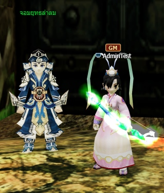
- Tiêu diệt Địa Tâm Ma Đao, thu thập 10 Lụa Mỏng Tinh Khiết
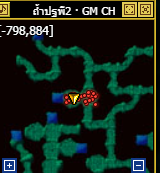
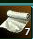 | Lụa Mỏng Tinh Khiết | x10 |
- Mang giao cho NPC Trưởng Lão Giới Luật

- Nhận nhiệm vụ tại NPC Thủ Quỹ Thăng chức lần 4 3/5 (77)
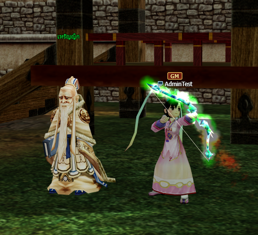
- Gặp NPC Bạch Diện Bái
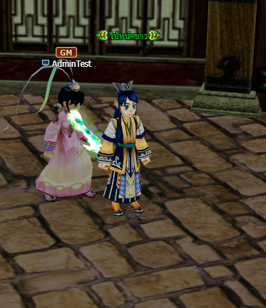
- Dịch chuyển đến Huyền Bột Phái gặp Vi Đại Bảo, nhận Thăng chức lần 4 3/5 (77)
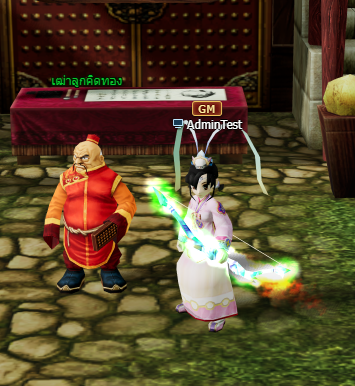
- Dịch chuyển đến Liễu Chính Quan, trả nhiệm vụ cho Hồng Phụng Hoàng
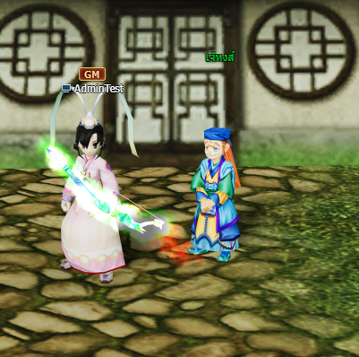
- Nhận nhiệm vụ tiếp theo tại Quan Chủ Liễu Như
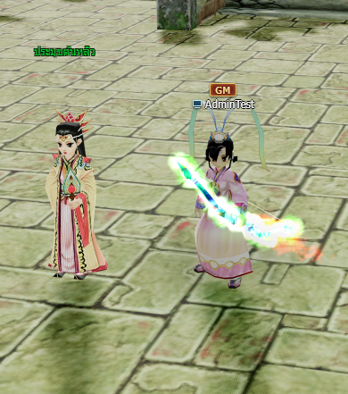
- Gặp Trịnh Tinh Ba nhận nhiệm vụ Thăng chức lần 4 3/5 (77)
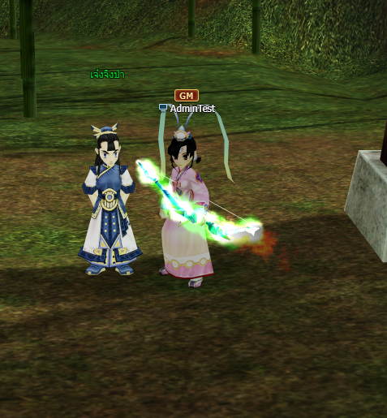
- Dịch chuyển đến Thần Võ Môn, trả nhiệm vụ cho NPC Thủ Quỹ

- Nhận nhiệm vụ Thăng chức lần 4 4/5 (79) tại Trưởng Lão Chấp Pháp
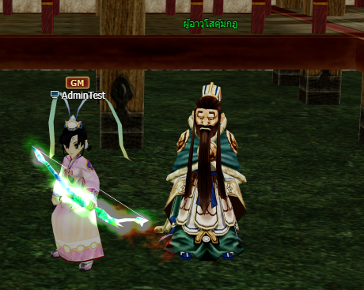
- Dịch chuyển đến Địa Tâm Động tầng 2, tiêu diệt Địa Tâm Thần Quyền và Địa Tâm Ma, thu thập Bùa và Khăn Che Mặt mỗi loại 10 cái
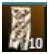 | Bùa | x10 |
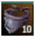 | và Khăn Che Mặt | x10 |
- Đến Thần Võ Môn trả nhiệm vụ cho NPC Trưởng Lão Chấp Pháp Thăng chức lần 4 4/5 (79)
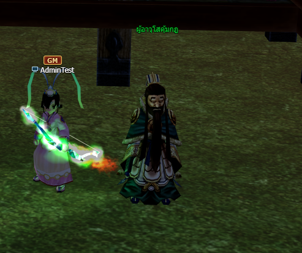
- Nhận nhiệm vụ tại NPC Phó Môn Chủ Thần Võ Môn Thăng chức lần 4 5/5 (81)
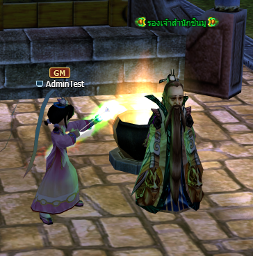
- Đến Địa Tâm Động tầng 2 và tầng 3, tiêu diệt Địa Tâm Ma Đao, Địa Tâm Thần Quyền, Địa Tâm Ma, Địa Tâm Vũ Nữ để lấy Vạt Áo, Kim Đao, Ma Tâm Liên, Trường Phiến mỗi loại 5 cái
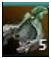 | Vạt Áo | x5 |
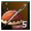 | Kim Đao | x5 |
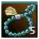 | Ma Tâm Liên | x5 |
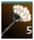 | Trường Phiến | x5 |
- Quay về Thần Võ Môn trả nhiệm vụ cho NPC Phó Môn Chủ Thần Võ Môn Thăng chức lần 4 5/5 (81)
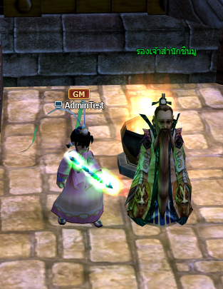
- Nhận nhiệm vụ tại NPC Ngọc Diện Tiểu Lang Thăng chức lần 4 5/5 (81)
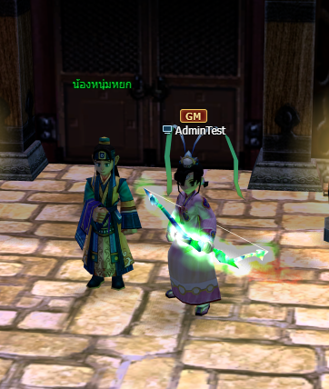
- Trả nhiệm vụ cho NPC Hoàng Diện Lão Nhân Thăng chức lần 4 5/5 (81)
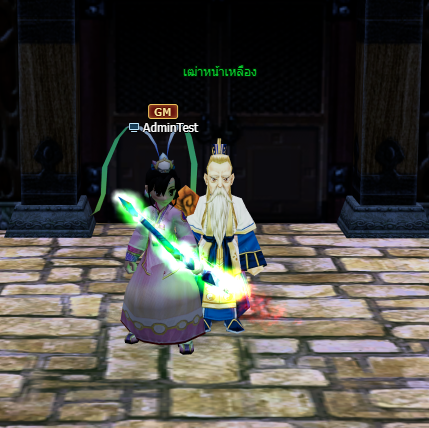
- Quay lại gặp NPC Ngọc Diện Tiểu Lang

- Đến Huyền Bột Phái gặp Môn Chủ Huyền Bột
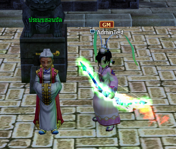
- Quay về Thần Võ Môn nói chuyện với NPC Phó Môn Chủ Thần Võ Môn
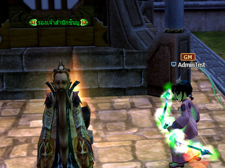
- Trả nhiệm vụ thăng chức lần 4 tại Môn Chủ Thần Võ Môn
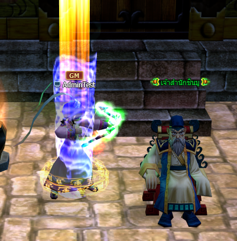